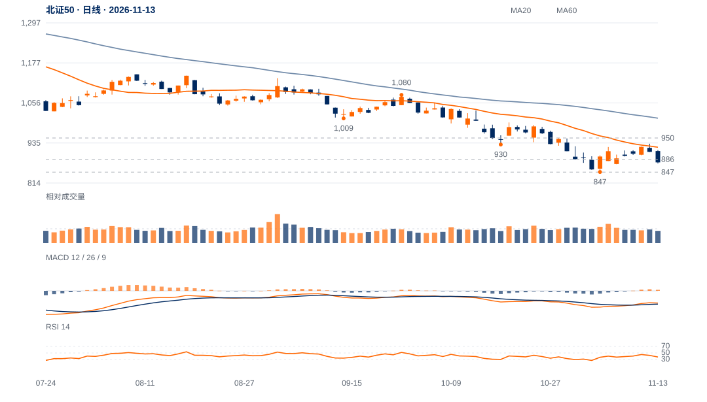

动量改善存在，价格仍降
10月19日低930.22对应日收RSI30.3；11月4日低847.36对应日收RSI36.9。两次价格低点下降、收盘动量上升，形成警示，但日收RSI并非最低价当时读数。
存在下行动量减速的观察价值，但当前885下方弱收和相对落后更直接。先看847能否守住，收复885及922前，仍按下降结构内反弹处理。

查看大图 ↗收回885并保持，再检验922及原950两日确认。
847失守，撤销本轮前低保持假设；原动量警示不享有无限等待期。
10月19日低930.22对应日收RSI30.3；11月4日低847.36对应日收RSI36.9。两次价格低点下降、收盘动量上升，形成警示，但日收RSI并非最低价当时读数。
13日收876.33，重新落回旧月收及近端观察885.74下方；日跌3.50%、收盘位置8%，并未给出动量警示后的向上价格确认。
近20日跌7.75%，相对沪深300比值跌4.21%；前跌波后八日尾段仅净升2.49%，当前仍靠近847旧低。
卖方动量未随更低谷同步恶化，且847旧低仍在。若低位拒绝下跌并持续收回885，动量警示才有机会转为可用修复。